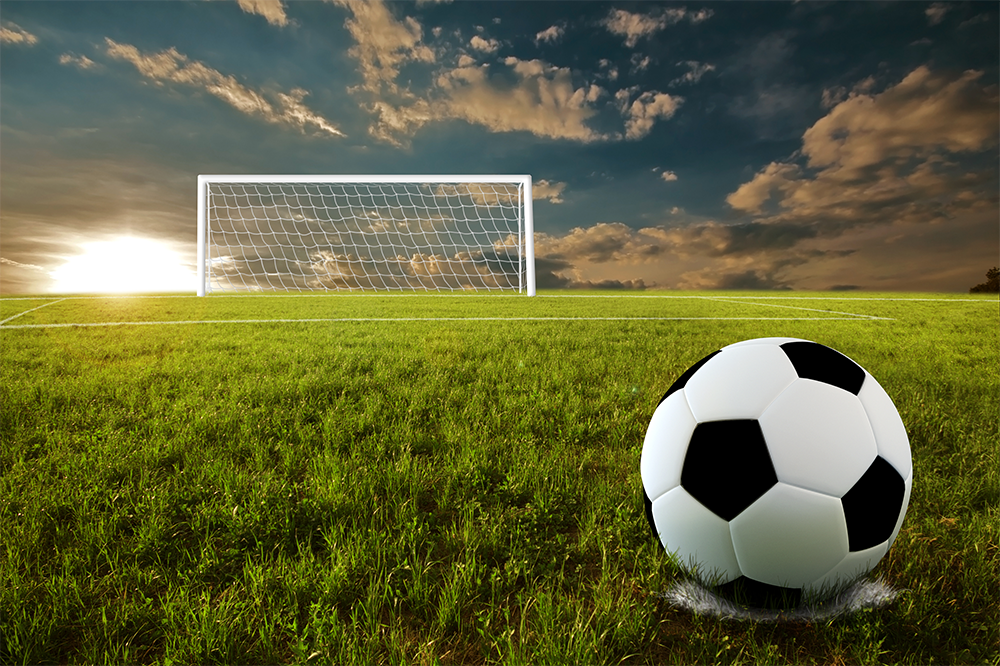

|  | Robot Soccer |
|---|---|
About the ProjectThis project consisted of proving the feasibility of a low cost localization and control system where a clear line of site is present. | |
InvolvementOur team consited of 2 undergraduate Electrical Engineers (Haiming Lou and myself) and one graduate Computer Science Major (Goutham Miryala). Our reasearch constited of a set of small robots which coordinated to play robot soccer. An academic paper is available for download here or may be seen below. |
|
Media | |
| Last Update: 5/02/2017 All Rights Reserved. | |
 |